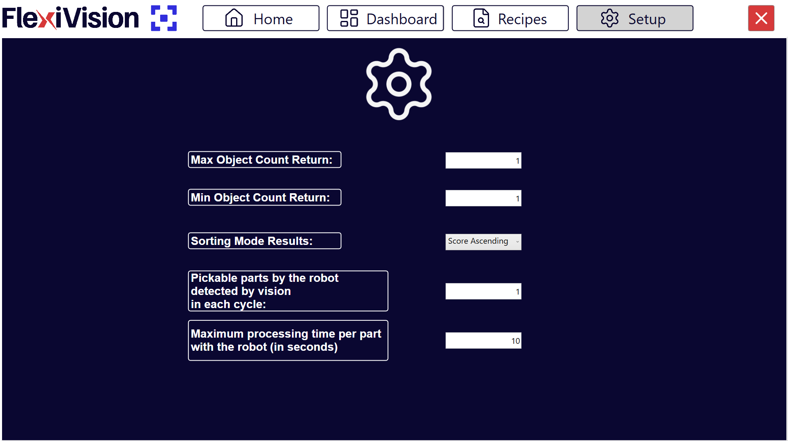

Passo 7: Protocol Setup#
La pagina Protocol Setup permette di configurare i parametri che regolano il flusso di comunicazione e lo scambio dati tra il sistema di visione FlexiVision One e il robot. Questi parametri determinano quanti oggetti vengono inviati, come vengono ordinati, e come il sistema gestisce le statistiche e gli stati operativi.
Note
Posizionamento Protocol Setup nel workflow
Protocol Setup si configura tipicamente:
Dopo: Calibrazione robot, creazione modelli
Prima: Monitoraggio produzione continua
Questo perché:
Richiede comprensione del comportamento robot (velocità, tipo gripper)
Influenza le statistiche mostrate in Dashboard
È l’ultimo step di configurazione prima della produzione vera
Una volta configurato correttamente, raramente richiede modifiche (solo se cambia robot o modalità operativa).
Accesso Protocol Setup#
Dal menu principale, accedere alla sezione dedicata al protocollo di comunicazione
Selezionare Protocol Setup
Si apre l’interfaccia con i parametri configurabili
Parametri Configurabili#

Parametro |
Descrizione e Funzione |
|---|---|
Indica il numero massimo di oggetti (cioè la loro terna di coordinate) che il sistema di visione può restituire al robot in una singola run. Se la visione rileva più oggetti di questo limite, ne vengono inviati al massimo questo numero, selezionati in base al criterio di ordinamento configurato (Sorting Mode). |
|
Indica il numero minimo di oggetti che devono essere restituiti in una run affinché il risultato venga considerato valido. Se il numero è inferiore a questa soglia, la run viene considerata non valida. |
|
Definisce il criterio di ordinamento con cui viene ordinata la lista degli oggetti restituiti dalla visione. Questo parametro determina la priorità di prelievo e determina quali oggetti vengono inclusi nel Max Object Count Return. Opzione tipica: per score decrescente. |
|
Pickable parts by the robot detected by vision in each cycle |
Indica il numero di prese che il robot effettua per ogni run della visione. Ad esempio, una presa doppia corrisponde a valore (. Non rappresenta il numero di oggetti rilevati dalla visione, ma il numero di prese robot per ciclo. Parametro utilizzato per il calcolo delle statistiche. |
Maximum processing time per part with the robot (in seconds) |
Definisce il tempo massimo dopo il quale il sistema considera conclusa la gestione/invio delle coordinate relative a una run e passa tipicamente dallo stato RUN allo stato IDLE. Parametro utilizzato per statistiche e gestione del flusso di lavoro. Attention Non è un timeout di errore del robot, ma un riferimento temporale per il calcolo del ciclo e per le metriche di produttività. |
Configurazione Dettagliata Parametri#
Max Object Count Return#
Funzione: |
Limita il numero massimo di coordinate che vengono inviate al robot per ogni ciclo di visione. |
Valori tipici: |
Tip Come scegliere il valore:
Esempio pratico:
|
Min Object Count Return#
Funzione: |
Limita il numero minimo di coordinate che vengono inviate al robot per ogni ciclo di visione. |
Valori tipici: |
|
Comportamento sistema: |
|
Impatto sulla produttività |
Min Count = 1 (più permissivo):
Min Count = 3 (più restrittivo):
|
Sorting Mode Results#
Modalità Sorting |
Descrizione e Quando Usare |
|---|---|
By Score (Descending) |
Ordina per score dal più alto al più basso. Oggetti con migliore corrispondenza al modello vengono inviati per primi. |
By Score (Ascending) |
Ordina per score dal più basso al più alto. Oggetti con peggiore corrispondenza al modello vengono inviati per primi. |
By X Coordinate (Ascending) |
Ordina per coordinata X crescente. Utile se robot ha preferenza di picking sequenziale lungo un asse. |
By X Coordinate (Descending) |
Ordina per coordinata X decrescente. |
By Y Coordinate (Ascending) |
Ordina per coordinata Y crescente. |
By Y Coordinate (Descending) |
Ordina per coordinata Y decrescente. |
X Alternating |
|
Y Alternating |
Tip
Scelta Sorting Mode ottimale
Consigliato nella maggior parte dei casi: By Score (Descending)
Vantaggi:
Massima affidabilità: robot preleva sempre i pezzi riconosciuti meglio
Riduce rischio di picking errati
Indipendente dalla posizione fisica
Note
La modalità di sorting interagisce con Max Object Count. I primi 15 oggetti (secondo il criterio) vengono inviati.
Pickable parts by the robot - Prese robot per ciclo visione#
Funzione
Parametro statistico che indica quanti pezzi vengono effettivamente prelevati dal robot per ogni ciclo di visione.
Valori tipici
1: robot con gripper singolo, preleva 1 pezzo alla volta
2: robot con gripper doppio o ventosa doppia
>2: robot con gripper o ventosa multi-pick
Important
Questo valore rappresenta le prese fisiche, non gli oggetti rilevati dalla visione.
Esempio chiarificatore
Scenario: gripper doppio, la visione rileva 5 oggetti.
Se voglio inviare al robot al massimo 2 oggetti, imposto
Max Object Count = 2.Se voglio che il robot effettui il pick di almeno 2 oggetti alla volta, imposto
Min Object Count = 2.In questo caso imposto
Pickable Parts by the robot = 2.Se invece voglio consentire anche il pick di un solo oggetto, imposto
Max Object Count = 2,Min Object Count = 1ePickable Parts by the robot = 2.
Impatto su statistiche Dashboard
Questo parametro e cruciale per il calcolo accurato dei Parts Per Minute (PPM).
Formula:
PPM = (Pickable parts x 60) / Tempo ciclo totale in secondiSe impostato in modo errato, il PPM visualizzato non corrisponde alla realta
Maximum processing time per part#
Funzione: |
Tempo di riferimento (in secondi) che il sistema usa per determinare quando un ciclo è considerato “completato” e passare da stato RUN a IDLE. |
Valori tipici: |
|
Come calcolarlo: |
|
Impatto tempo processing su Dashboard |
Salvataggio Configurazione#
Warning
Salvataggio obbligatorio
Dopo aver configurato i parametri di Protocol Setup:
Verificare che tutti i valori siano impostati correttamente (. Cliccare su Recipes > Save Recipe
I parametri vengono salvati nella configurazione sistema
Prossimi Passi#
Una volta completato Protocol Setup, il sistema è configurato completamente per l’operatività:
→ Verifica Risultati (Dashboard) - Monitoraggio produzione e validazione configurazione